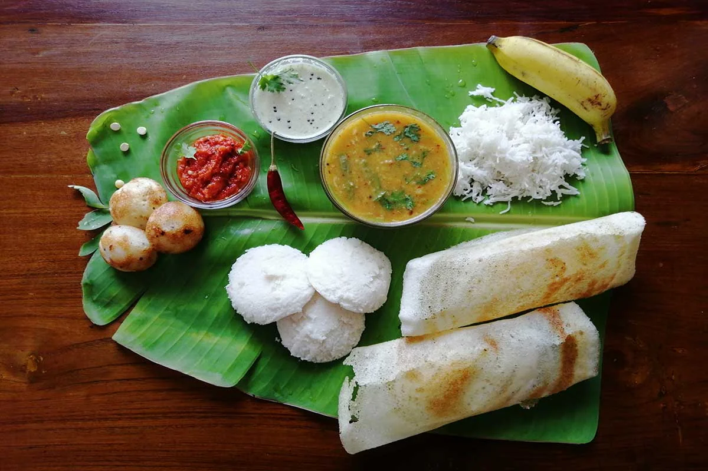
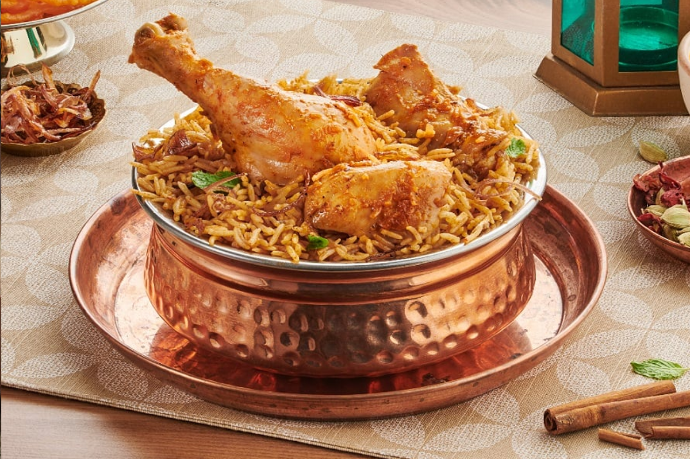
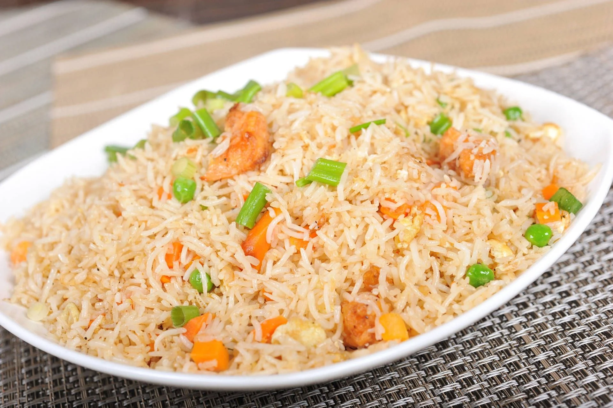
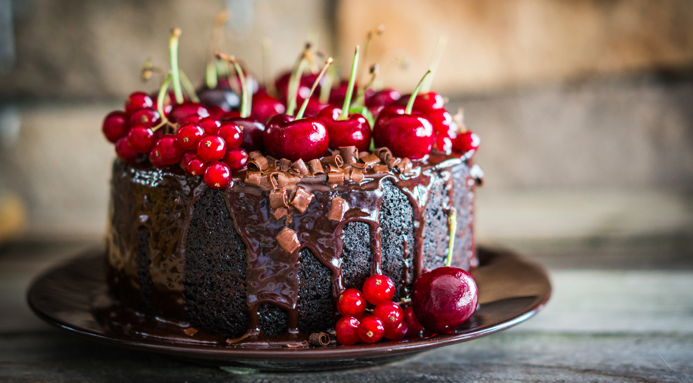
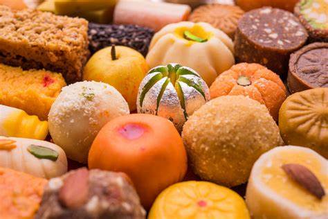

Inspiration for your first order |
||
|---|---|---|
|  |
All types of tiffin varieties are available |
We serve fresh and healthy home-made food to people who are living away from their homes.
|
|  |
Yummy Yummy biryani's for you |
Biryani is a tasty dish enjoyed by many people. It is made with rice, meat like chicken , and lots of spices. The rice turns yellow because of a special spice called turmeric. It also has raisins and boiled eggs. Some people add vegetables too. Biryani is cooked in a big pot and it smells really good. It is a special dish in India and people often make it for big celebrations. It takes a long time to cook, but when it’s ready, it’s very delicious. Everyone loves to eat biryani because it is so yummy. |
.jpg)
|
Pizza's |
A pizza joke? Never mind, it’s too cheesy. In crust we trust. Pizza is round, but it comes in a square box and we eat it in triangles. Life is full of circles. I pepper-only have eyes for you. Slice, slice, baby. You’ve stolen a pizza my heart. Keep calm and carry out pizza. |
.jpg)
|
Burgers |
Each joke is grilled to perfection and served with a side of laughs. From bun to bun, you’ll find these one-liners absolutely irresistible. 1. I have beef with people who don’t like burgers. 2. I’ve reached peak burgerfection! 3. That’s a rare medium, well done! 4. Lettuce celebrate with a burger! |
|  |
Friedrice's |
Meet your new go-to dish for quick, flavorful, and satisfying meals: single serving Fried Rice For One. |
Rolls |
Rolls are like two sentence love stories that pack the punch in a small pocket. Filled with mystery ingredients rolls have always been a favourite of gourmet lovers and chefs who like to make myriad experiments with food by putting them in interesting wraps. We have brought to you some delectable rolls that are supremely delicious. |
|
|  | Cake's |
In the world of desserts, cake reigns supreme and so does its humor. Here’s a delightful mix of sugar, spice, and everything witty, rolled into bite-sized one-liners. Ready for a slice of laughter? |
|  | Sweets |
Excellence in Every Bite of Our Sweets, Snacks, and Treats a commitment to bringing the authentic taste of Royal India to your homes. |